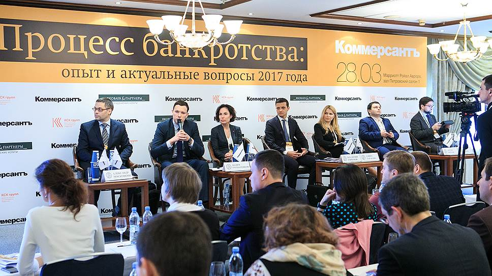

<div class="insidePage">
	<div class="insideContent">
		<div class="textContent">
			<div class="sometextTitle" id="yalta">Деятельность Фонда защиты кредиторов</div>
				<div class="herosubtitle">Деятельность фонда</div>
					<div class="herotext">
			Фонд защиты кредиторов - единственное в России объединение, целью которого является повышение качества управления проблемными активами, защита прав кредиторов и развитие лучших практик антикризисного управления в России.<br>
						
						Деятельность Фонда направлена повышение качества управления проблемными активами, на защиту прав кредиторов.<br>

Основными направлениями деятельности являются следующие:<br>
Консолидация голосов на собраниях кредиторов<br>
Улучшение анти-кризисного управления путем непосредственного взаимодействиями с менеджментом, кредиторами<br>
Разрешение конфликтов и спорных ситуаций, затрагивающих интересы кредиторов<br>
Иные мероприятия, включая взаимодействие с государствеными органами<br>


			</div>
		<div class="textContent">
			<div class="newsDate">28.10.2017</div>
			<div class="sometextTitle" id="yalta">ФОНД ЗАЩИТЫ КРЕДИТОРОВ ПРИНЯЛ АКТИВНОЕ УЧАСТИЕ В VI УРАЛЬСКОМ ФОРУМЕ АРБИТРАЖНЫХ УПРАВЛЯЮЩИХ</div>
				<div class="herosubtitle">VI Уральский форум арбитражных управляющих прошел в г. Екатеринбурге 26-27 октября и был посвящен 25-летию создания профессии арбитражного управляющего в России.</div>
					<div class="herotext">
			Мероприятие носит статус всероссийской конференции, поэтому традиционно собирает экспертов в сфере антикризисного управления со всей страны. Участие в мероприятии приняли руководители крупнейших СРО, юристы и арбитражные управляющие, представители Росреестра, ФНС и бизнеса.<br>
			<br>
			На Форуме обсуждались самые важные вопросы и антикризисного управления, и банкротства предприятий страны в целом. В частности, в своем выступлении Начальник управления обеспечения процедур банкротства ФНС Константин Чекмышев предложил ввести рейтингование арбитражных управляющих и последующее назначение управляющего на процедуру на основании рейтинга. Владимир Винницкий, первый заместитель председателя комиссии Общественной палаты России по безопасности и взаимодействию с ОНК, обратил внимание на серьезную роль банкротств и социально-экономической политике РФ. Представитель Росреестра Татьяна Спирихина подняла весьма болезненную для отрасли тему привлечения арбитражных управляющих к административной ответственности за неисполнение своих обязанностей. 

			Представители Фонда защиты кредиторов приняли участие в обсуждении судебной практики по искам к страховым компаниям по делам, связанным с нарушением арбитражными управляющими Закона о банкротстве. 
			Представители Фонда поделились с собравшимися актуальным опытом рассмотрения судебных дел, применении судами Закона о банкротстве в части обязательного страхования арбитражных управляющих. В докладе нашли отражение спорные вопросы, возникающие при урегулировании убытков между страхователем и страховщиком, а также предложения, как улучшить процесс взаимодействия между сторонами.  
			</div>
			<div class="newsDate">28.07.2017</div>
			<div class="sometextTitle" id="zakon">ФОНД ЗАЩИТЫ КРЕДИТОРОВ О НОВОМ ЗАКОНЕ О СУБСИДИАРНОЙ ОТВЕТСТВЕННОСТИ</div>
				<div class="herosubtitle">Совет Федерации утвердил поправки к закону о банкротстве, дополняющие появившийся полгода назад в законодательстве институт субсидиарной ответственности при банкротстве.</div>
					<div class="herotext">
			Главное изменение в механизме — существенное упрощение привлечения к ответственности виновных в банкротстве собственников бизнеса. Взамен лица, привлекаемые к субсидиарной ответственности, получат формальный статус участника банкротства, смогут оспаривать требования кредиторов, а при предъявлении регрессных исков по такой ответственности — сами входить в число кредиторов на равных правах с другими кредиторами. Кроме того, изменения позволяют номинальным руководителям организации-банкрота сделки с судом. Фонд защиты кредиторов считает, что основным результатом будет изменение смысла самого банкротства — сейчас оно слишком часто рассматривается как способ ухода и от долгов в целом, и от уплаты налогов. 
			<br>
			Расширение возможностей для выявления реальных контролирующих лиц за счет введения возможностей для номинальных директоров уменьшения размера ответственности в случае, если они способствуют раскрытию сведений о злоупотреблениях реальных бенефициаров и их активах. Сделка с кредиторами и судом может дать реальные результаты, если номинальный руководитель не настроен в полном объеме перевести на себя долг. 

			Фонд защиты кредиторов полагает, что принятые изменения существенно улучшат ситуацию, теперь субсидиарному ответчику недостаточно будет просто не являться на процесс, надеясь на то, что у заявителя не хватит доказательств для высвечивания его статуса бенефициара и совершенных злоупотреблений. 

			</div>
			<div class="newsDate">28.03.2017</div>
			<div class="sometextTitle" id="kvartplata">В МОСКВЕ СОСТОЯЛАСЬ КОНФЕРЕНЦИЯ «ПРОЦЕСС БАНКРОТСТВА: ОПЫТ И АКТУАЛЬНЫЕ ВОПРОСЫ 2017 ГОДА».</div>
				<div class="herosubtitle">Фонд защиты кредиторов принял активное участие в ряде обсуждений.</div>
					<div class="herotext">
			  В конференции ИД «Коммерсантъ» «Банкротство: опыт и актуальные вопросы 2017 года» приняли участие представители госорганов, сообществ оценщиков, арбитражных управляющих, кредиторов и юристов. Мероприятие состояло из трех сессий, модераторами которых последовательно выступили Александр Московкин, руководитель блока «Право» на сайте «Российской газеты», Анна Занина, руководитель арбитражной группы ИД «Коммерсантъ», и Вадим Жураковский, управляющий партнер ИК «Содружество».
			<br>
									
									<br>
			Представители Фонда в рамках круглого стола поделились информацией как правильно собирать информацию и при ее помощи контролировать 
			ход банкротства и защищать свои интересы в суде. Грамотная аналитика и всесторонний анализ информации — залог успешной процедуры банкротства, 
			мерило которой — защита интересов кредиторов, эффективность взыскания. Особое внимание рекомендовано уделять непрерывному контролю реестра кредиторов 
			и поведения арбитражного управляющего.					</div>
			
		
		</div>	
	</div>
</div>
